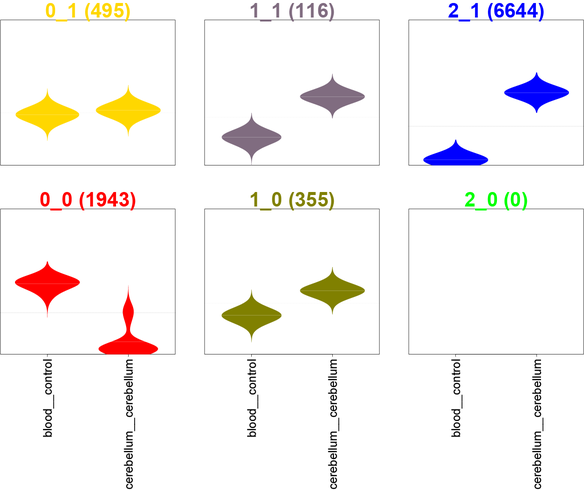

Welcome!
- My name is Dave
- I'm a PhD student here at RIKEN
- I'm here to (hopefully) show you how to analyse CAGE data using R. (Some of the methods can be applied to other high-throughput sequencing datasets.)
Dave Tang
PhD candidate
We will be using the CAGEr package, so we need to install it. While we're at it, we can download/install some FANTOM3 and FANTOM4 CAGE data:
source("http://bioconductor.org/biocLite.R")
biocLite("CAGEr")
biocLite("FANTOM3and4CAGE")
Loading the libraries
library(CAGEr)
library(FANTOM3and4CAGE)
data(FANTOMhumanSamples)
head(FANTOMhumanSamples)
## dataset group sample
## 1 FANTOMtissueCAGEhuman cerebrum cerebrum
## 2 FANTOMtissueCAGEhuman renal_artery renal_artery
## 3 FANTOMtissueCAGEhuman ureter ureter
## 4 FANTOMtissueCAGEhuman urinary_bladder urinary_bladder
## 5 FANTOMtissueCAGEhuman kidney malignancy
## 6 FANTOMtissueCAGEhuman kidney kidney
set.seed(31)
image(matrix(rnorm(100),nrow=10))


\[ a^2 + b^2 = c^2 \]